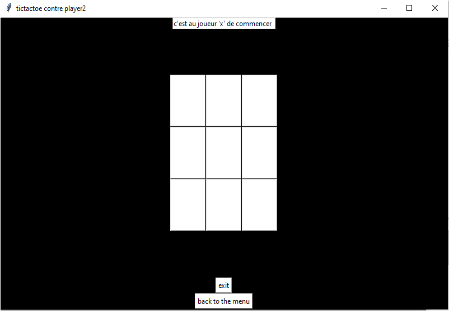
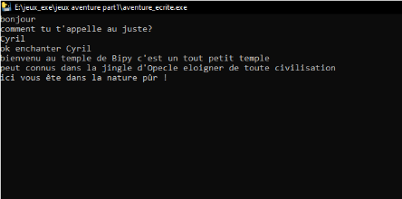

Mes projets
Oui comme vous l'avez bien lu, vous pouvez voir ici tous les projets que j'ai réalisés,
La plupart sont en Python (mon langage de programmation préféré ! 🤩).
Pour vous expliquer, chaque projet est téléchargeable avec son titre, cliquez dessus et voyez ce qui se passe !
|  |
OXO ou Tic Tac Toe📜 Explications:
Salut !
🚀 But du jeux:
🛠 Technologies utilisées:
Le jeu a été réalisé en Python en utilisant Tkinter, un module standard permettant de créer des interfaces graphiques utilisateurs (GUI).
|
|---|
Enigmatic Game📜 Explications:
Enigmatic Game,
Le jeu est réalisé de ma propre main, je programme l'intégralité du jeu en python avec le package Pygame. 🚀 But du jeux:
🛠 Technologies utilisées:
|

|
|---|
|  |
Histoire écrite📜 Explications:
Histoire écrite,
Ce jeu est l'un de mes premiers projets que j'ai fais, c'est donc pour ça que le jeu n'est pas plus complexe que les deux précédents.
🚀 But du jeu :
🛠 Technologies utilisées:
La console est une fenêtre où vous pouvez saisir des commandes pour votre logiciel. l'invite de commande ou Cmd pour "commandes" en anglais est principalement utilisée pour gérer des dossiers, des fichiers, les paramètres de l'ordinateu, etc.
|
|---|